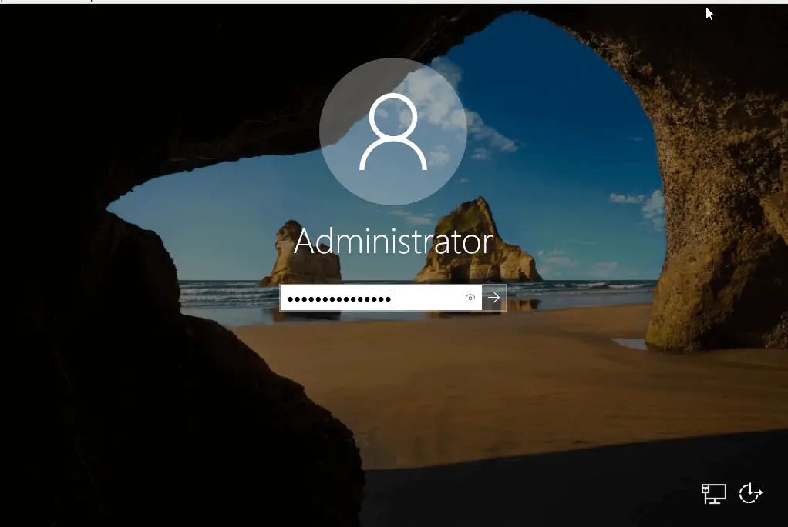

Installing Windows
How To Install Windows Server 2019 Step by Step
Welcome to our guide on how to Install Windows Server 2019. With every release of a Windows Server operating system, Sysadmins are always excited to setup a testbed or do the actual installation on a Production environment. Windows Server 2019 was released for everyone on October 2, 2018.
This guide will walk you through the steps of installing Windows Server 2019 on a physical server, Virtual Environment or in the Cloud. For a physical server installation, you’ll need to pull the Windows Server ISO image and burn to a USB device.
Linux users can create a Windows server bootable USB using our guide Create Windows Server bootable USB on Linux
Windows Server 2019 installation steps
After creating a bootable USB or DVD medium, insert it and start your Computer. VirtualBox, KVM and VMware users only need to attach the ISO file during VM creation and follow the installation steps shown.
1.On the first screen, select installation language, Time and keyboard layout the click “Next“.
2.Start the installation by clicking on “Install Now“.
The setup should start in a short while.
3.Select the Windows Server 2019 edition to install and click Next.
4. Read the License terms and agree to them to start the installation by checking the box “I accept the license terms“.
5. if this is the first installation of Windows Server 2019 on the server, select (Custom: Install Windows only).
6. Select a partition to install Windows Server, you can optionally create new one from available or use total available size by clicking “Next“.
7. The installation should start, wait for it to finish.
8. The system should automatically reboot after the installation. Set Administrator password when prompted on the next screen.
9. Click Finish to complete the installation. To login with the Administrator user, use Ctrl + Alt + Del key combination.
10. Provide your Administrator Password and hit Enter.
You can get Windows Server details on the settings section.
Access to Server Manager Local Server section should also give you some details about Windows Server 2019 installation.